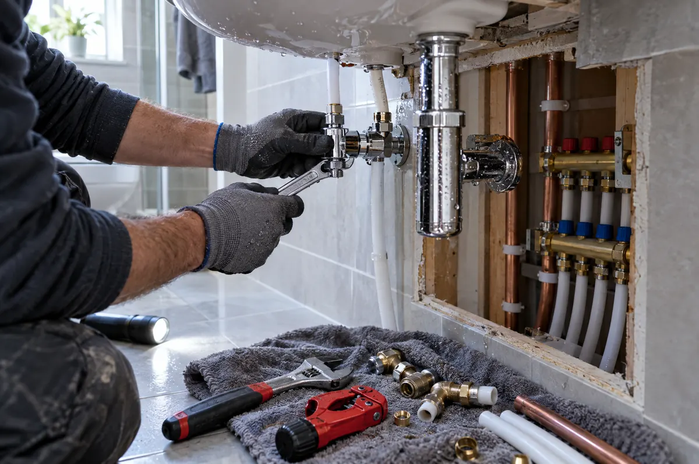
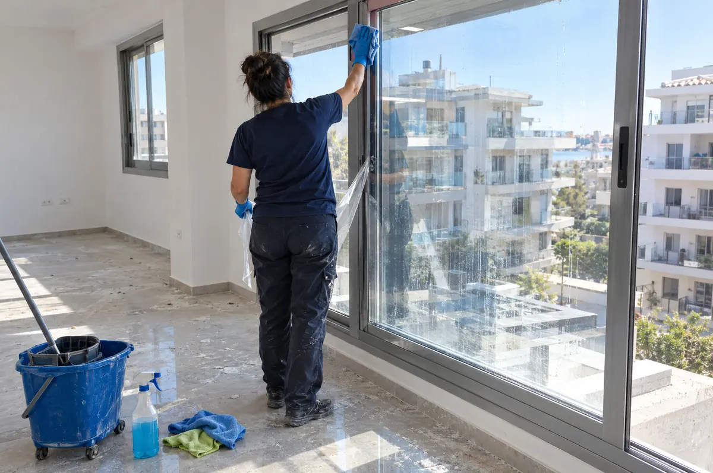
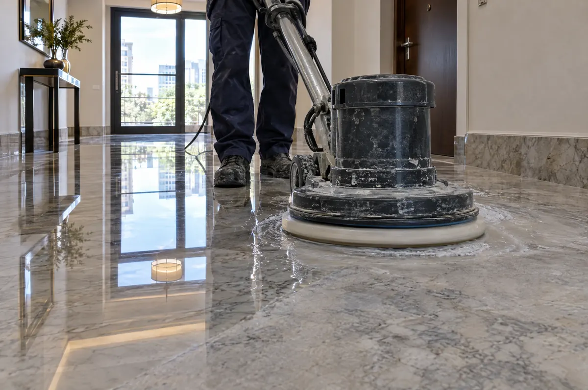
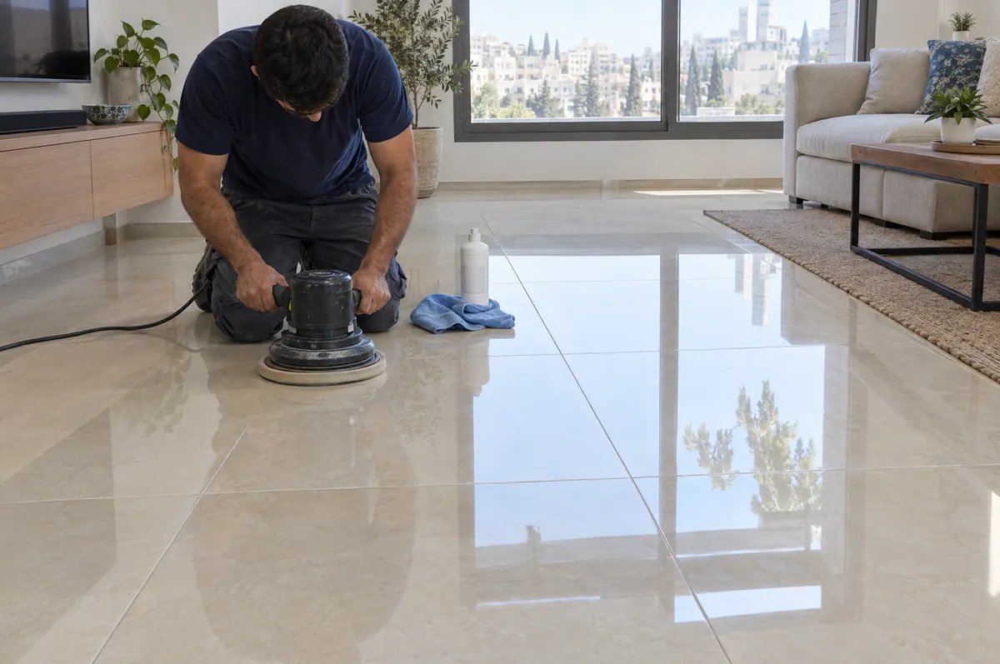
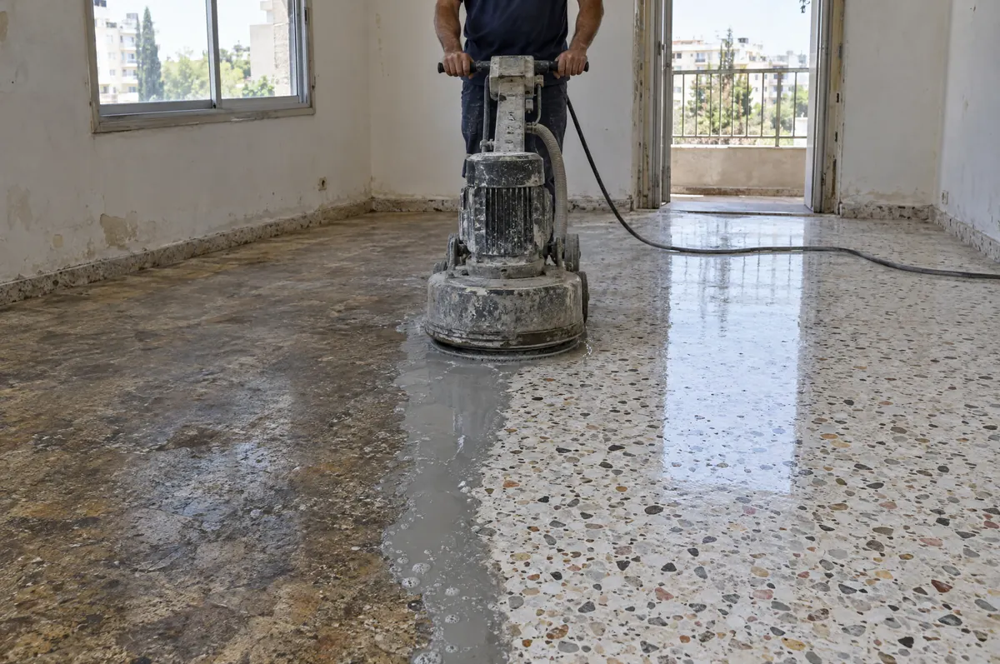
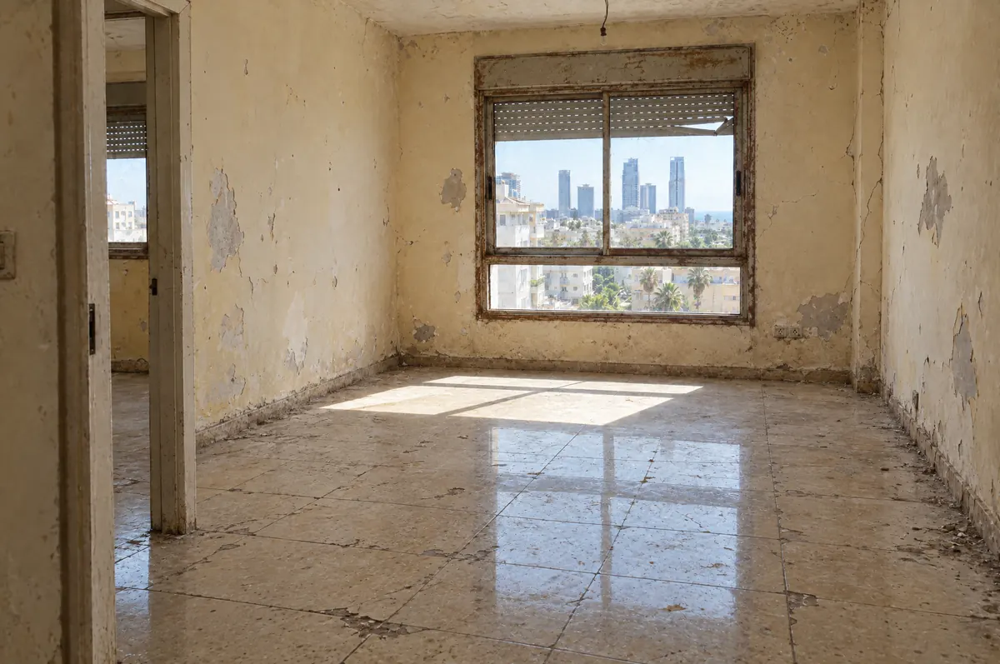
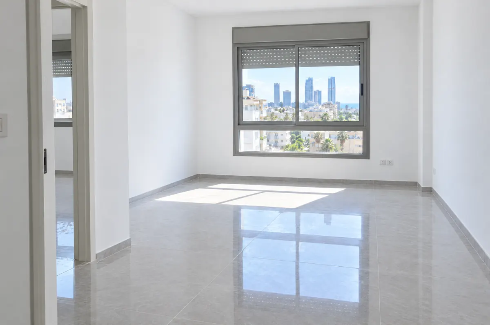

משפצים,
מנקים,
מוסרים מוכן.
צוות אחד לכל הנכס: בנייה, טיח, אינסטלציה וצבע, ואחר כך ניקיון לפני אכלוס, פוליש וחידוש רצפות. לדירות, לבתים ולמשרדים.
קודם משפצים.
שיפוץ מלא או חלקי, לדירה או למשרד. מנהלים את כל בעלי המקצוע בעצמנו, ואתם מדברים עם כתובת אחת.

שיפוצים
פירוק, בנייה, אינסטלציה, ריצוף וצבע, ובסוף ניקיון ומסירה.
לפרטים
צבע
הכנה, שפכטל וצביעה נקייה לדירות, משרדים וחדרי מדרגות.
לפרטים
בנייה, טיח וגבס
מחיצות, קירות בלוקים, גבס וטיח, מוכנים לצבע.
לפרטים
אינסטלציה
החלפת צנרת, נקודות מים, ניקוז והתקנת כלים.
לפרטיםואז מבריקים.
ניקיון לפני אכלוס, פוליש לשיש ולפורצלן, חידוש רצפות ישנות וניקיון יסודי לבתים ולמשרדים.

ניקיון לפני אכלוס
אבק בנייה, צבע, דבק ומסילות. מוכן לכניסה.
לפרטים
פוליש קריסטל
ליטוש וגביש לשיש וטראצו. ברק עמוק שמחזיק.
לפרטים
פוליש לגרניט פורצלן
מסירים עמימות ושאריות רובה ומחזירים ברק לאריחים.
לפרטים
חידוש רצפות
שיוף, יישור וליטוש לטראצו ושיש, בלי לפרק.
לפרטים
ניקיון כללי
ניקיון יסודי לבתים ולמשרדים, חד פעמי או קבוע.
לפרטים

לפני השיפוץאחרי השיפוץגררו. תראו
את ההבדל.
אותו חדר, לפני ואחרי: קירות, ריצוף, חלון וניקיון סופי. משכו את הידית שמאלה עד הסוף.
מהשיחה ועד
המפתח.
ארבעה שלבים פשוטים. בכל שלב אתם יודעים מה קורה, מי בשטח ומתי מסיימים.
- 1
שיחה ותמונות
מתקשרים או שולחים תמונות בוואטסאפ ומספרים מה צריך.
- 2
סיור והצעה
מגיעים לנכס, מודדים ונותנים הצעה מפורטת ולוח זמנים.
- 3
עבודה
צוות קבוע בשטח: שיפוץ, ואחריו ניקיון ופוליש.
- 4
מסירה
עוברים יחד על כל חדר ומוסרים נכס מוכן לכניסה.
עובדים בכל
הארץ.
מהצפון ועד הדרום. ספרו לנו איפה הנכס ונתאם צוות, סיור ותאריך.
- הצפון והגליל
- חיפה והקריות
- השרון
- גוש דן ותל אביב
- השפלה
- ירושלים והסביבה
- הדרום ובאר שבע
- יהודה ושומרון
שאלות ששואלים
אותנו.
לא מצאתם תשובה? התקשרו או כתבו בוואטסאפ.
אתם עושים גם את השיפוץ וגם את הניקיון?
כן. אותו צוות משפץ, מנקה ומלטש. אין צורך לתאם בין קבלן, צבעי, אינסטלטור וחברת ניקיון.
באילו אזורים אתם עובדים?
בכל הארץ, מהצפון ועד הדרום, כולל ירושלים והשרון. ספרו לנו איפה הנכס.
איך מקבלים הצעת מחיר?
שולחים בוואטסאפ כמה תמונות ותיאור קצר, או מתקשרים. לעבודות גדולות מתאמים סיור בנכס.
אתם עובדים עם לקוחות פרטיים ועסקיים?
כן. דירות ובתים פרטיים, ועדי בתים, משרדים, חנויות וחללים מסחריים.
אפשר להזמין רק פוליש או רק ניקיון?
בוודאי. כל שירות אפשר להזמין לבד, ואפשר לשלב כמה שירותים בהצעה אחת.
מה מתכננים
אצלכם?
ספרו לנו בכמה מילים מה צריך, אפשר לצרף תמונות בוואטסאפ, ונחזור אליכם עם הצעה. עובדים בכל הארץ, ללקוחות פרטיים ועסקיים.
052-858-0800